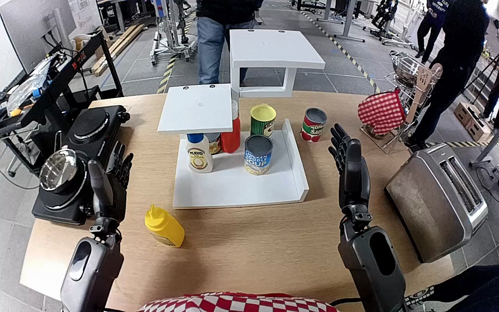

NVIDIA GR1 · 39
Video 39

Visual review action_review.json
{
"prompt_protocol": "humanoid_action_v1",
"prompt_provenance": "visually_authored_from_video_and_initial_frame",
"reviewed_contact_sheets": [
"sheet_001.jpg"
],
"inspected_frame_stride": 2,
"inspected_sampled_frame_count": 60,
"initial_scene": "Forward egocentric view between the robot arms. A yellow mustard squeeze bottle stands on the tabletop in front of the white shelf, whose empty middle platform is directly above a white mayonnaise bottle. Both hands are initially open.",
"observed_sequence": [
{
"start_frame": 0,
"end_frame": 30,
"action": "The mustard bottle remains upright on the tabletop; the left hand begins positioning for the reach while the right arm remains raised and inactive.",
"confidence": "high"
},
{
"start_frame": 31,
"end_frame": 58,
"action": "The left arm reaches toward the mustard bottle with fingers open and brings the palm alongside its body.",
"confidence": "high"
},
{
"start_frame": 59,
"end_frame": 70,
"action": "The left fingers close around the mustard bottle body, establishing a one-handed grasp.",
"confidence": "high"
},
{
"start_frame": 71,
"end_frame": 90,
"action": "The left hand lifts the bottle from the tabletop and raises it upright toward the middle shelf platform.",
"confidence": "high"
},
{
"start_frame": 91,
"end_frame": 110,
"action": "The left arm carries the upright bottle over the middle platform and lowers its base onto the white shelf.",
"confidence": "high"
},
{
"start_frame": 111,
"end_frame": 119,
"action": "The bottle stands upright on the middle platform while the left hand begins loosening/opening beside it. The hand remains close and a completely cleared release is not shown.",
"confidence": "high for placement and opening; uncertain for complete release"
}
],
"arm_hand_roles": {
"left": "Sole manipulating hand: reaches, grasps the bottle body, lifts and transports it upright, lowers it onto the middle shelf, then starts opening.",
"right": "Open hand and forearm stay to the right of the work area; no support, transfer, or bottle contact.",
"coordination": "One-handed manipulation; no bimanual coordination or person interaction."
},
"anatomical_side_evidence": {
"description": "The initial forward body-mounted view looks between paired robot forearms extending from the lower sides of the camera/body position. The active arm enters from the robot-left side and retains the same articulated hand throughout the sequence; paired forearm orientation and hand/thumb morphology are consistent with the anatomical left hand. This is an egocentric view, not a frontal view requiring left/right reversal. The source instruction independently labels the active hand left.",
"confidence": "high",
"limitations": "Upper torso and shoulders are outside the image; side assignment uses the paired egocentric forearm/body configuration, not image position alone."
},
"terminal_state": "The yellow mustard bottle is upright with its base on the white shelf middle platform. The left hand is opening but remains beside and partly across the bottle; the right hand stays inactive. A fully withdrawn left hand and completely independent settled bottle are not visible.",
"uncertainties": [
"The final hand overlaps the bottle and remains adjacent to it, so complete loss of hand contact and unsupported stability after release cannot be established."
],
"annotation_discrepancies": [],
"evidence_frame_indices": [
0,
44,
58,
70,
84,
104,
110,
116,
118,
119
],
"selected_execution_status": "incomplete",
"outcome_basis": "The requested relocation reaches the middle shelf visibly, but final opening is still in progress and complete release/hand clearance is not demonstrated.",
"inspection_coverage": {
"full_sequence": "Every second decoded frame 0–118 viewed in the complete contact sheet; final source frame 119 inspected natively.",
"native_frames_viewed": [
44,
58,
70,
84,
104,
110,
116,
118,
119
],
"source_initial_png_viewed_at_native_resolution": true
},
"video_id": "39",
"dataset": "NVIDIA_GR1_100",
"dedicated_review_agent": "review_gr1_39",
"review_source_video": "NVIDIA_GR1_100/39/original/original.mp4",
"source_frame_count": 120,
"source_fps": 20.0,
"native_detail_frames": [
44,
58,
70,
84,
104,
110,
116,
118,
119
],
"world_model_prompt": "The robot grasps the yellow mustard bottle with its left hand and lifts it upright from the tabletop. It carries the bottle to the white shelf's middle level, lowers it onto the shelf, and begins opening its hand while keeping the bottle upright. Keep the camera fixed; preserve robot geometry, physically valid joint motion, and normal gripper opening and closing.",
"original_task_instruction": "Use the left hand to pick up yellow mustard bottle from tan table to middle level of white shelf.",
"selected_segment": {
"start_frame": 0,
"end_frame_exclusive": 120,
"reason": "Complete original single-task reference; no cropping or trimming requested."
},
"source_video_sha256": "bf509ae1cbfdff0b5decab3b82d55180e2ab7ba1d8c48336a3d812a52d2e061a",
"review_completed_at": "2026-10-13T18:04:49.057887+00:00"
}